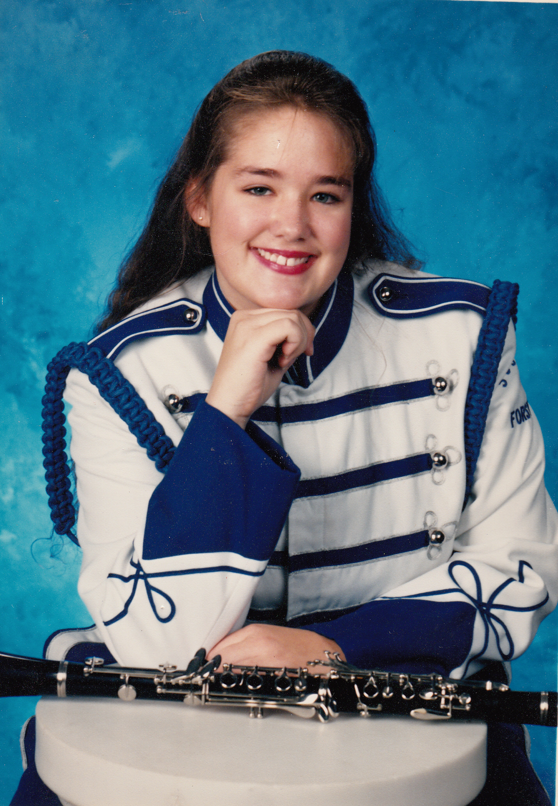

I was born in Anderson, Indiana as the youngest of three girls. Being the baby of the family brought many advantages. My older sisters were never allowed to pick on me. My mom let me eat baked apples for every single meal for three straight months because I refused everything else. We moved to Georgia when I was five and that's where most of my life was spent.
 School was always easy for me. I was smart and made friends easily. I was never popular but in a small town, everyone knew everyone else. My lofty aspirations of wanting to take over the world surfaced in 8th grade and I decided to run for Freshman Class President. Much to my shock, I won...Freshman, Sophomore, Junior and Senior class President. I was also very involved with other activities: I was in many clubs and played the clarinet in the High School Band.
| Back to About Me | | My Hobbies | | Back to Home Page |